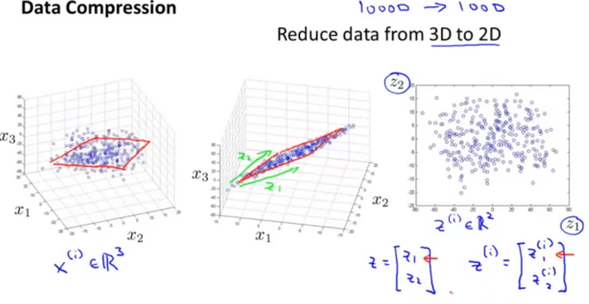
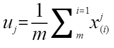
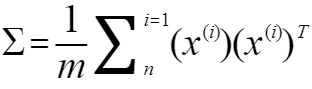

通常我们的数据集的特征会有很多，有部分特征会产生冗余，可以使用降维的方式去降低特征的维度，将3D的特征降维成为2D将2D降低成为1D。想法是，在避免丢失信息的情况下将多维度数据投影到一条直线或一个平面上，这条直线并不是坐标轴。这样可以加快我们后面算法的运算速度。

主成分
主成分分析可以在训练集中识别出那一条轴对差异性的贡献度最高，
如何找到主成分
有一种标准举证分解技术，叫做奇异值分解。他会将训练集矩阵X分解成为三个矩阵的点积U·Sigma·V^T,其中V^T包含我们所想要的所有主成分
Principal Componet Analysis (PCA)
- 获取数据x1,x2,x3…xm
- 先对数据进行均值归一化,计算均值，然后使每个样本数据减去均值，使用xi - uj,uj为均值 
- 在低维子空间中寻找一个向量或者一个面来投影我们所有的数据点
- 计算”协方差”convariance matrix 获取主成分 
- 我们可以使用munpy中的svd()函数获取训练集中的所有主成分，下列示例我们获取主成分中的前两个主成分
X_centered = X - X.mean(axis = 0)
U,s,V = np.linalg.svd(X_centered)
c1 = V.T[:,0]
c2 = V.T[:,1]- 我们已经确定获取到了所有主成分，就可以将数据集投影到前d个主成分定义的超平面上从而将数据集维度从n维度，降低到了d个维度，需要将数据集投影到前d个主成分上只需要将训练集与前d个主成分组成的矩阵点积即可。
- X_{d-proj} = X · Wd ；Wd为前d个主成分组合矩阵
W2 = V.T[:,:2]
X2D = X_centered.dot(W2)
这样实现了在尽可能保留多差异性的同时，将任意数据集降低到任意维度
另：sklean中的PCA
from sklean.decomposition import PCA
pca = PCA(n_components = 2)
X2D = pca.fit_transform(X)通过pca.components_获取主成分例如获取第一个主成分pca.components_.T[:,0]
方差解释率
非常有用的主成分信息是主成分的方差解释率。他表示的是每个主成分对数据集方差的贡献程度，从这个角度上来说，我们在K维的数据集上，我们保留主成分时候，只要保留的方差保持在90以上，我们的数据降维就是可行的。方差结实率在sklean中可以通过pca.explained_variance_ratio_获取
在sklean中我们可以直接设置保留多少方差，来获取最低维度数量。
pca = PCA()
pca.fit(X)
cumsum = np.cumsum(pca.explained_variance_ratio_)
d = np.argmax(cumsum >=0.95) + 1d就是我们获得的最低维度数量，我们再次使用d来执行PCA，获取低维度降维主成分
或者我们传入一个浮点数，说明要保留的多少方差的主成分，让sklean来获取我们想要的的主成分个数
pca = PCA(n_components = 0.95)
X_preduced = pca.fit_transform(X)